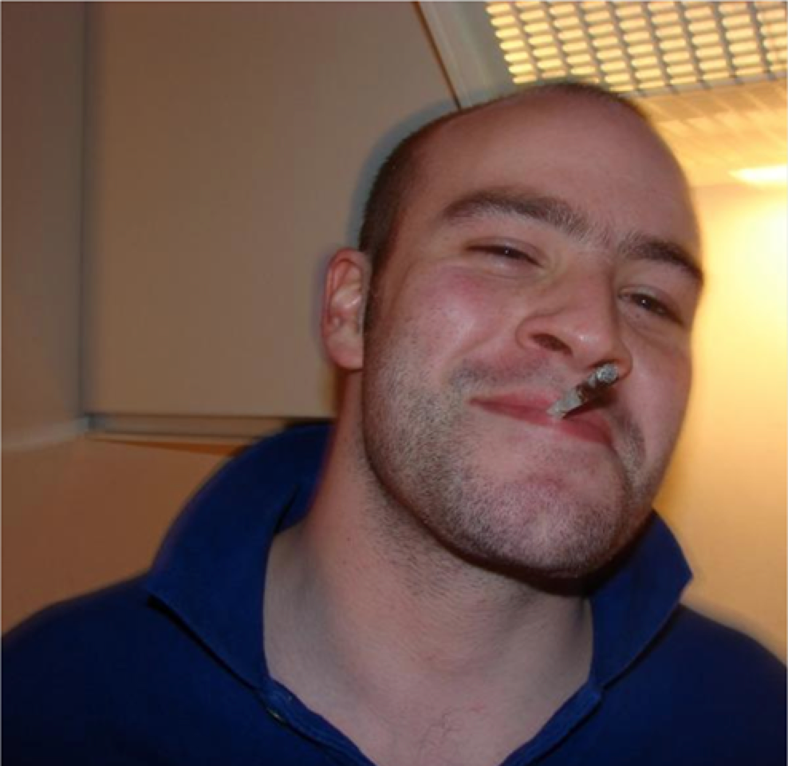

Newbies or seasoned hackers
Topics:
- scaffolding
- docs
- stability
- community
Mozilla: 45+ Django modules
Useless modules are OK
I want to use your module
When should you create a module?
from setuptools import setup
setup(name='yourmodule',
version='1.0.0',
...)
Publish to
PyPI
python setup.py sdist \
register \
upload
yourmodule/__init__.py:
__version__ = '1.0.0'
import re, sys
version = None
for line in open("./yourmodule/__init__.py"):
m = re.search("__version__\s*=\s*(.*)", line)
if m:
version = m.group(1).strip()[1:-1]
quotes
break
assert version
setup(...,
classifiers=[
'Programming Language :: Python :: 2',
'Programming Language :: Python :: 3',
])
Support Python 2 and 3 with
six
setup(...,
license='Apache 2')

WTFPL - Do What the Fuck You Want to Public License
Write documentation (it's ok to be lazy)
Add a README.rst file (yes, reStructuredText)
Say anything in the README, just say something
Crucial docs:
- what your module is for
- how to install it
- how to use it
- how to hack on it
Usage docs:
- show code, examples
- use doctest (but be careful)
- document settings
.. doctest::
:hide:
>>> fudge.clear()
.. doctest::
>>> from fudge import Fake
>>> do_login = Fake()
def login(user, passwd):
"""
Logs in the user
:param user: string
:param passwd: string
:rtype: boolean
"""
.. autofunction:: yourmodule.login
Tell a story about your module. Fallback to the API reference.
How to test...
- test environment
- running tests
- running partial tests
Nice docs:
- where to get help
- changelog
- roadmap?
Use
tox to test your module
[testenv]
commands=
python manage.py test
[testenv:py27]
basepython=python2.7
[testenv:py32]
basepython=python3.2
[django14]
deps=
Django >= 1.4, < 1.5
[django15]
deps=
Django >= 1.5, < 1.6
[base]
deps=
M2Crypto >= 0.21.1
[django14]
deps=
Django >= 1.4, < 1.5
{[base]deps}
language: python
python:
- "2.7"
install:
- pip install tox
script: tox
Accepting patches
- choose your criteria
- require tests
- require docs
- review patches
Open source governance
- meritocracy
- experts emerge
- contributors come and go
Bikeshedding
- don't let it slow you down
- working code trumps all
Maintenance?!
- chores, release management
- quit at will
- appreciate and empower others
- maintain modules you care about
That's it
- make amazing modules
- try to patch other modules first
- questions?
- @kumar303